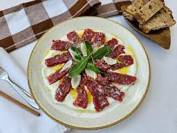

Burrata Gratinada
Ingredientes
- 1 burrata.
- 1 xícara de chá de tomates-cereja.
- Azeite de olivia a gosto.
- Sal a gosto.
- Manjeiricão a gosto.
Modo de Preparo
- Reúna todos os ingredientes da burrata gratinada.
- Leve uma panela ao fogo médio e refogue os tomates no azeite.
- Tempere com sal, adicione a burrata e misture delecadamente.
- Tranfira o conteúdo da panela para uma forma, leve-a ao forno pré-aquecido a 220°C e asse por cerca de 20 minutos.
- Finalize com manjericão e sirva.
Brusqueta
Ingredientes
- 1 baguete pequena.
- 1 dente de alho.
- 2 tomates Italianos grandes e bem maduros.
- 2 ramos de manjeiricão.
- Azeite a gosto.
- Sal e pimenta-do-reino a gosto.
Modo de Preparo
- Reúna todos os ingredientes da brusqueta.
- Corte a baguete em fatias de aproximadamente 1cm.
- Descasque o dente de alho e esmague-os nas fatias de pão.
- Coloque as fatias em uma assadeira, regue-as com um fio de azeite e leve ao forno pré-aquecido a 180°C por cerca de 10 minutos.
- Lave e cortes os tomates e retire as sementes.
- Corte os tomates em cubos.
- Em uma tigela, coloque os tomates e as folhas de manjeiricão, acrescente um fio de azeite, o sal e a pimenta e misture.
- Coloque uma porção desse tomate temperado por cima de cada fatia e regue com mais um fio de azeite.
Crostini
Ingredientes
- 1 e 1/2 xícara de chá de farinha de trigo cerca de 200g.
- 2 colheres de chá de fermento biológico seco.
- 1 colher de chá de sal.
- 3 colheres de sopa de azeite de olivia.
- 1/2 xícara de água.
- 1 colher de sobremesa de lemon peper a gosto.
- queijo parmesão ralado a gosto.
- Azeite de olivia para pincelar a massa.
Modo de Preparo
- Separe os ingredientes listados para preparar o crostini.
- Em uma tigela, coloque a farinha, o fermento e o sal. Misture com uma espatula.
- Acrescente o azeite e a água, mexendo com a espátula até os ingredientes começarem a incorporar.
- Sove a massa por aproximadamente 5 minutos ou até ficar lisa e homogênea.
- Molde a massa em formato de bola, cubra a tigela com plastico-filme e deixe-a descansar por 30 minutos.
- Polvilhe farinha de trigo, divida em 3 partes iguais e abra uma delas com o rolo, quanto mais fina melhor.
- Tranfira a massa para uma forma, pincele azeite na massa toda tempere com lemon pepper, queijo ralado e orégano.
- Leve-as formas ao forno pré-aquecido a 230°C até a massa ficar dourada.

Carpaccio de carne
Ingredientes do picles
- 1 xícara de chá de água.
- 1/2 xícara de chá de vinagre.
- 2 colheres de sopa de açúcar.
- 2 colheres de sopa de sal.
- 250g de cebola pérola.
- 1 galho de dill.
- Coentro a gosto.
- Pimenta-do-reino a gosto.
Ingredientes do Carpaccio
- 250g de bife de sua preferência.
- 1 colher de café de flor de sal.
- 1 colher de pimenta-do-reino.
- 1 colher de sopa de azeite
- Parmesão a gosto.
- 8 folhas de rúcula selvagem.
Modo de Preparo
- Reúna os ingredientes.
- Em uma tábua corte i bife em cubos.
- Para montar escolha um prato e faça a primeira camada de coalhada utilizando uma colher.
- Depois coloque a carne cortada em cubos em cima e despeje azeite.
- Coloque a pimenta e adicione um pouco do picles de cebola, rale o parmesão e raspas de limão siciliano.
- Finalize com as folhas de rúcula por cima e sirva com pão.
Grissini
Ingredientes
- 250g de farinha de trigo.
- 1/2 colher de sopa de fermento biológico seco.
- 1/3 colher de sopa de sal.
- 1/2 xícara de água.
- 1/4 de xícara de chá de azeite de olivia
Modo de Preparo
- Separe em uma bancada os ingredientes.
- Em uma tigela adicione a farinha o fermento o sal e misture com um garfo, acrescente água e misture bem.
- Adicione o azeite e comece a mexer com uma colher e depois misture com as mãos.
- Sove a massa até que ela desgrude das mãos e reserve-a por 1 hora.
- Unte uma assadeira com manteiga e pré-aqueça o forno a 250°C por 30 minutos
- Para preparar o grissini comece apertando a massa para formar um disco.
- Corte a massa em tiras e enrole-as.
- Leve para o forno por 15 minutos e está pronto o seu grissini.
Polenta Frita
Ingredientes
- 300ml de água fria.
- 2 xícaras de chá de fubá.
- 1 colher de azeite.
- 1/2 cebola picada.
- 3 dentes de alho picado.
- 700ml de água morna.
- 1 colher de café de sal.
- Fubá.
Modo de Preparo
- Reúna todos os ingredientes.
- Coloque a água fria e o fubá em uma tigela e misture.
- Leve uma panela em fogo baixo e acrescente azeite a cebola e o alho picado e refogue.
- Junte a mistura de fubá a água o sal e mexa sem parar por cerca de 25 minutos.
- Transfira a polenta pra uma assadeira e leve para a geladeira por 2 horas.
- Desinforme a polenta e coloque sobre uma superfície lisa, corte-a em tiras e empane no fubá.
- Leve uma panela ao fogo e adicione óleo espere ele esquentar e frite as polentas.